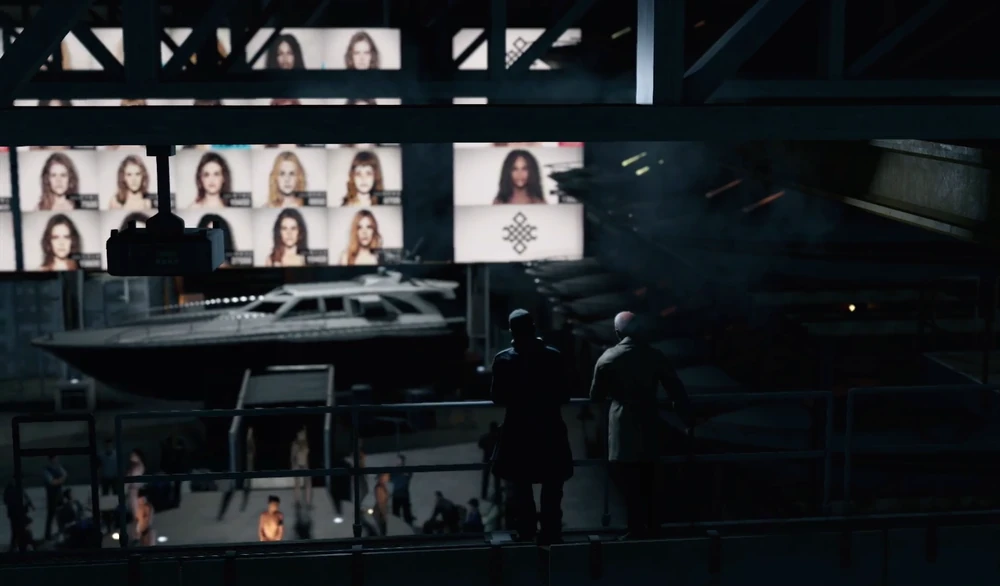
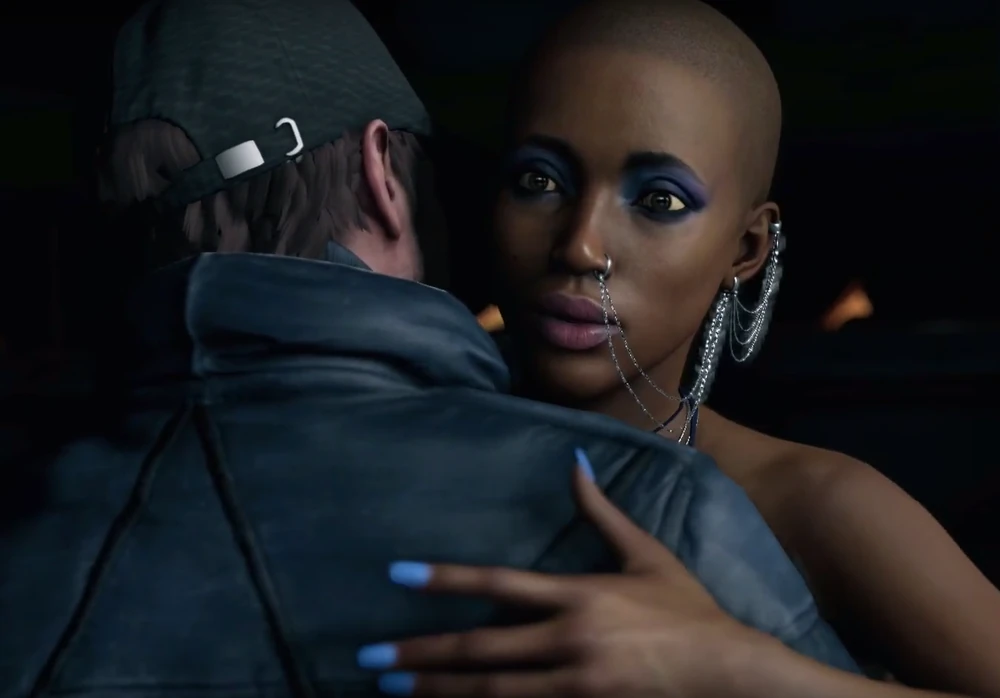
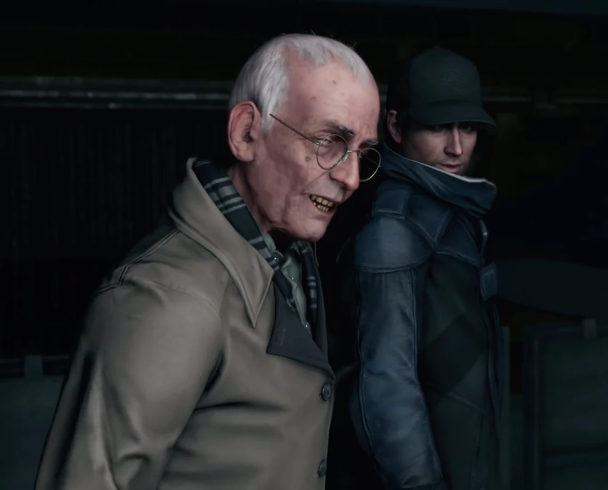
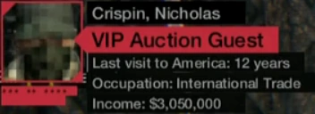
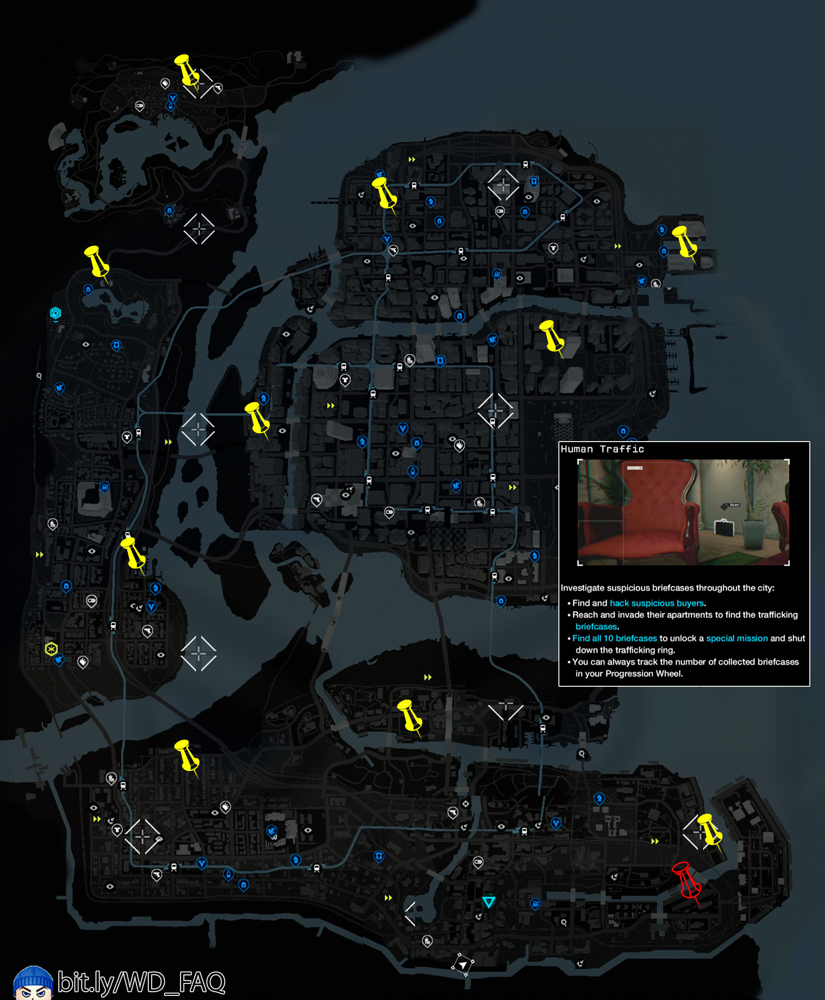

Part of the story : ACT II, Mission 12 : A Risky Bid
Target : Donna "Poppy" Dean
Enemies : Chicago South club, Black Viceroys
Location : Skipsun Rentals, Brandon Docks
Picture of the place :

Purpose of the mission
Aiden have to enter in the auction by usurpating the identity of Nicholas Crispin, an american who doesn't went back to US since 12 years.
By passing in the Auction, he had to clone the signal of the card of Iraq, the leader of the Viceroys and also scramble the signal of the chip of "Poppy" who is a victim of Human trafficking

After Aiden reached the top of the auction, the game start and dialogue between Aiden and Dermot "Lucky" Quinn and at the same time Iraq approch near to Aiden
Aiden took that opportunity to clone the signal of his card and Quinn ask some question to Aiden about what he thinks about his little "show" on the ground of them.
But Quinn feels very mistrustful because he doesn't hear an accent in the voice of Crispin (Pearce)

After that, Aiden rescues Poppy and Quinn ordered to everyone in the Auction to find Crispin
Facts
The ctOS profile of Aiden changes to the description of Nicholas Crispin but the facial recognization still doesn't work for him

You unlock the U-100 weapon, one of the best assault rifle in the game by taking down an armored Iraq guard (make sure you have unlocked the skill to do it)
This is only at this time that Aiden can call the police of Chicago
You unlock the side quest investigating about Human Trafficking to get a bonus mission
